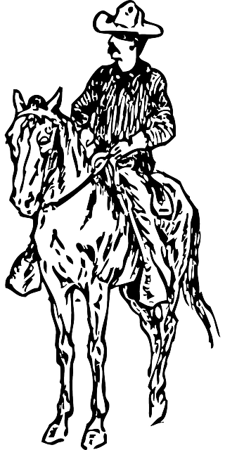

Country life and Gauchos
Rural life in Argentina is characterized by vast plains, lush
pastures, and a close connection to nature. Many people in the
countryside practice agriculture and livestock farming. Grains such as
wheat and corn, which are important staple foods, are particularly
cultivated. Cattle are also kept here in large herds, which is very
typical for Argentina, as the country is known for its beef
production. Agriculture is an important pillar of the Argentine
economy and strongly shapes the landscape of rural regions.

A special part of Argentine rural life are the gauchos. Gauchos are the
Argentine cowboys who traditionally roam the pastures and herd cattle.
They are known for their distinctive clothing, such as the poncho, hat,
and gaiters, as well as for their skills in riding and handling animals.
The tradition of the gauchos dates back to the time of the Spanish
conquerors and the indigenous population, which has developed into a
distinct culture over the centuries. Gauchos are not only animal
herders, but also bearers of a rich folklore, with songs, dances, and
stories passed down from generation to generation. They symbolize
freedom, closeness to nature, and hard work on the land. The life of the
gauchos is characterized by simplicity, community, and a deep connection
to nature and animals. Their traditions are an important part of
Argentine identity and are still maintained in many regions today.